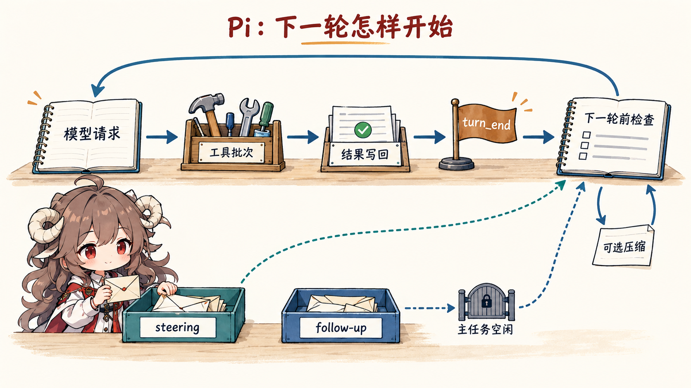
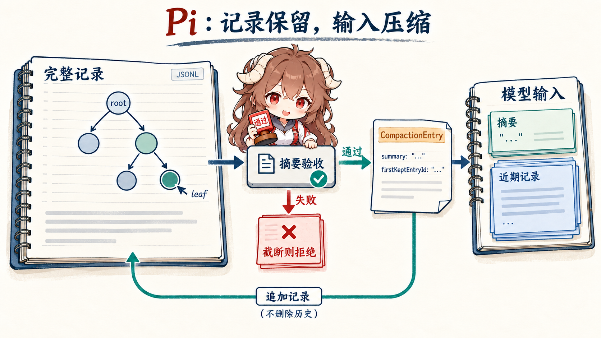

先从一个很具体的任务开始。你让 coding agent “把配置读取改成异步，再跑测试”。它可能先读文件，
再修改实现，随后执行测试；测试失败后，它还要读错误、继续修复。做到这里，一个普通的
while (tool_call) 已经不够了：模型输出正在流式到终端，工具可能并行完成，
你可能在中途补一句“不要改公共接口”，会话还可能在两万行日志之后需要压缩。
Pi 把自己称为 agent harness，而不是一套预先规定好的开发流程。这里的 harness 可以理解成“运行托架”：
它保证模型、工具、事件和会话能稳定地跑起来，但不替每个团队决定应该怎样审批命令、怎样规划任务、
是否启用 sub-agent。这个取舍不是 README 里的口号，它一路落到
runLoop、
SessionManager
和
ExtensionAPI
的边界里。
阅读契约。 本篇只追一个问题：Pi 的最小核心究竟拥有什么，哪些责任又被有意留给扩展？ 读完后，你应该能从一条用户指令出发，重放模型调用、工具结果、消息插队、会话持久化、 分支和压缩，并说清 durable ledger 与 model-visible view 为什么不是同一份东西。
证据边界。
源码链接固定到公开快照 34582ef34beec868b0df4fb969385b8af5960c45。
“运行托架”“durable ledger”“model-visible view”是对公开代码责任的工程归纳；
provider 的闭源服务行为、第三方扩展策略和容器内部实现不在本文断言范围内。
先把全文压成一条形状级 trace：
用户：“把配置读取改成异步，再跑测试”
-> AgentSession：装配 model、tools、system prompt、resources、SessionManager
-> agent-core：transformContext -> convertToLlm -> provider stream
-> assistant message：文本 / thinking / toolCall
-> tool batch：参数校验 -> beforeToolCall -> execute -> afterToolCall
-> AgentEvent：message_update / tool_execution_* / turn_end
-> SessionManager：把 message、toolResult、model change 追加到 JSONL 树
-> 下一轮：先处理 steering；没有工具和 steering 后再处理 follow-up
-> 上下文过长：追加 CompactionEntry，模型改看 summary + recent entries
-> /tree 换路：移动 leaf，可选写入 BranchSummaryEntry这不是一段真实 TypeScript，而是后面每节要补全的状态交接。最重要的两个词是“追加”和“投影”： durable session 主要追加记录；模型每一轮看到的 context，则由当前 leaf、compaction 边界和消息转换共同投影出来。
| 同一 session 的三种视图 | 怎样得到 | 谁会使用 | 允许丢失什么 |
|---|---|---|---|
| Durable ledger | JSONL 追加所有 entry，包括旧分支、custom entry 和 compaction record。 | SessionManager、/tree、恢复与审计。 |
正常运行不靠删除旧 entry 来省上下文。 |
| Active branch | 从当前 leafId 沿 parentId 回到 root。 |
当前会话导航、fork/clone 与 context rebuild。 | 其他分支仍在 ledger 中，但不属于当前路径。 |
| Model-visible view | 在 active branch 上应用 compaction boundary、transformContext 和 convertToLlm。 |
下一次 provider request。 | 可以有损压缩、过滤 UI-only entry；不能破坏工具调用与结果的对应关系。 |
一、先认清四层：Pi 不是一个巨大的 Agent 类
1.1 从 provider 到终端，每层只接一类责任
仓库根 README 把项目拆成四个包：
pi-ai、pi-agent-core、pi-coding-agent 和 pi-tui。
对初学者来说，可以先不要记包名，只记住四个问题：provider 的不同消息格式谁抹平，模型与工具谁循环，
coding agent 的文件和会话谁管理，终端怎样消费事件。
| 层 | 它拥有的责任 | 它不负责决定什么 | 第一眼源码 |
|---|---|---|---|
pi-ai |
统一 model、provider、消息 content block、tool schema、usage 和流式 assistant event。 | 不决定 coding agent 应该调用哪个工具，也不保存会话树。 | Provider / Models |
pi-agent-core |
拥有 agent state、turn 事件、模型调用、工具批次、steering 和 follow-up 队列。 | 不知道文件工具长什么样，也不知道会话落在哪个目录。 | message 与 event contract |
pi-coding-agent |
装配 read/bash/edit/write、system prompt、resources、session、compaction、extensions 和运行模式。 | 不把 TUI 当成唯一入口，也不把某个 provider 写死在产品层。 | createAgentSession |
pi-tui / modes |
把同一事件流呈现成交互终端、print/JSON、RPC，或让 SDK 嵌进别的应用。 | 不重写 agent loop；界面只是 runtime 的消费者。 | 四种运行入口 |
这套分层带来一个很实用的判断：Pi 的“产品”是终端 coding agent，但它的可复用核心不是终端。
SDK 直接创建 AgentSession，RPC 则把命令、响应和事件编码成逐行 JSON；
两者最终都复用同一条 agent 与 session 主线。
SDK contract
和
RPC framing
只是两种不同的外壳。
1.2 “最小”不等于 completion adapter
如果核心只是把文本传给模型，它无法解释三件事：工具结果为什么能和原始 tool call 对上， 用户中途的新消息什么时候进入，进程重启后为什么能从同一分支继续。Pi 把这些都留在核心， 因为它们决定了运行是否可重放；至于“每次 bash 都弹确认框”还是“整个进程运行在容器里”， 则属于具体环境的安全策略。
Pi 的核心边界： 保证一次 agent run 在消息、事件、工具结果和会话记录上自洽；不替所有使用者规定工作流与安全交互。
二、一轮不是一次 completion：沿 runLoop 走完
2.1 模型每次只提出下一步，runtime 才拥有循环
回到“改异步并跑测试”的任务。第一次模型响应可能包含一个 read，
第二次包含 edit 和 bash，第三次才给最终回答。模型并不知道整个 while loop
什么时候结束；它只通过 stopReason 和 content blocks 交出这一步。
源码里的决定顺序可以简化成五步：
- 把 pending steering message 加进当前 context。
- 调用 provider，流式得到一个完整 assistant message。
- 如果里面有 tool call，先完成整个工具批次并写入 tool result。
- 发出
turn_end，再检查是否需要停止、刷新下一轮配置或注入 steering。 - 当工具和 steering 都清空后，才去取 follow-up；也没有 follow-up 才发
agent_end。
这正是
runLoop
的内外两层循环：内层处理工具与 steering，外层让“本来已经结束的 agent”还能接住 follow-up。

2.2 工具并行完成，但账本仍按原始顺序写
假设模型一次请求同时要读取两个互不相关的文件。Pi 默认可以并行执行工具；但“并发完成顺序”和
“assistant 原始 tool call 顺序”不是一回事。快的工具可以先发
tool_execution_end，最终写入 context 的 tool-result messages 仍按模型提出调用的顺序排列。
这样 UI 能及时更新，下一轮模型又能拿到稳定的调用—结果配对。
具体实现先逐个做参数校验和 beforeToolCall preflight，再把允许的调用并发执行；
Promise.all 收集后，按数组原顺序发出 tool result message。
如果任一工具声明 executionMode: "sequential"，整个 batch 会退回顺序执行。
参见
executeToolCalls。
实时事件顺序
tool A start
tool B start
tool B end
tool A end适合 UI 展示真实进度。
模型账本顺序
assistant: [A, B]
toolResult: A
toolResult: B保持调用与结果的稳定对应。
另一个容易忽略的失败边界是输出截断。如果 assistant message 因长度上限停止，残缺 JSON 有时仍可能被“尽力解析”成看似合法的参数。Pi 不执行这些调用，而是为整个批次生成错误结果， 让模型下一轮重新发出完整参数。 截断工具调用处理 保护的是副作用完整性，不只是 parser 成功率。
2.3 steering 与 follow-up 不是两个名字相似的队列
当 agent 正在跑测试时，你输入“不要改公共接口”，这是 steering：当前 assistant turn 和已经提出的工具调用会先正常结束， 这句话随后在下一次模型调用前进入 context。你输入“做完后再补一个 changelog”，则更像 follow-up： 只有当原任务已经没有工具和 steering 可处理时，它才开启下一轮。
这个边界避免了两个常见错误。第一，steering 不会把正在执行的工具凭空抹掉；
第二，follow-up 不会在主任务中途抢占上下文。低层 contract 在
getSteeringMessages / getFollowUpMessages，
产品层又把 Enter 与 Alt+Enter 映射到两类队列。
三、AgentMessage 不是 provider message：先投影，再调用模型
3.1 一份运行历史里可以有模型根本不该看到的记录
Pi 在 agent 层使用可扩展的 AgentMessage。其中既可以有标准 user、assistant、toolResult，
也可以有应用自己的状态消息。真正调用模型前，runtime 先执行可选的 transformContext，
再执行必须的 convertToLlm：
AgentMessage[]
-> transformContext() // 压缩、裁剪、注入外部上下文
-> AgentMessage[]
-> convertToLlm() // 过滤 UI-only 项，转换自定义消息
-> provider Message[]
这个边界写在
streamAssistantResponse。
它意味着“会话里存在”不自动等于“下一轮发给模型”。扩展的普通 CustomEntry
可以持久化计数器却完全不进入 context；CustomMessageEntry 才是显式进入 model-visible view 的类型。
3.2 provider 差异停在 pi-ai，上层只看统一事件
Anthropic、OpenAI Responses、OpenAI-compatible chat、Google 等 provider 的 wire shape 不一样，
但 agent loop 消费的是统一的 AssistantMessageEventStream。流开始时先把 partial assistant message
放进当前 context；text、thinking、tool-call delta 持续替换这条 partial；done/error 到来后再落成 final message。
对上层来说，provider 变了，message_start → message_update → message_end 的生命周期不变。
因此，pi-ai 的价值不只是“支持很多模型”，而是让工具循环与 provider payload 解耦。
它和上一篇 AgentScope 的 adapter 思路相近，但 Pi 把这层单独做成可复用包，
coding agent 还可以通过 extension 注册新 provider 或覆盖 base URL。
registerProvider
是产品层重新接入 provider 的扩展点。
四、会话不是聊天数组：JSONL 账本为什么要长成树
4.1 id + parentId + leaf 把“回到过去”变成移动指针
线性聊天数组遇到 /tree 会很尴尬：用户回到第十轮重写问题，后面的旧回答是删除、复制到新文件，
还是继续混在数组里？Pi 选择 append-only tree。每条 entry 都有 id 和
parentId，leafId 表示当前所在位置；从 leaf 沿 parent 一直走回 root，
就得到当前有效分支。
{"type":"message","id":"m1","parentId":null,"message":{"role":"user","content":"改成异步"}}
{"type":"message","id":"m2","parentId":"m1","message":{"role":"assistant","content":[...]}}
{"type":"message","id":"m3","parentId":"m2","message":{"role":"toolResult",...}}
{"type":"message","id":"b1","parentId":"m1","message":{"role":"user","content":"保留同步兼容层"}}
这是简化后的 shape，不是完整 session 文件。m3 与 b1 是从不同位置继续的两条路；
旧记录没有被改写。SessionManager.branch() 只是把 leaf 移到较早 entry，
下一次 append 自然成为它的新 child。
分支与 tree 构造
直接体现了这条 invariant。
4.2 /tree、/fork、/clone 解决的是三种不同问题
| 操作 | 记录怎么变 | 适合的场景 |
|---|---|---|
/tree |
留在同一个 JSONL，移动 leaf；可选把离开的分支总结到新位置。 | 在同一任务里试另一种实现，同时保留两条路径。 |
/fork |
把选定 active path 复制成新的 session 文件，并把旧 user prompt 放回编辑器。 | 从过去的问题开始一个独立实验。 |
/clone |
复制当前 active path 到新 session，编辑器为空。 | 保留当前上下文，但把后续工作拆成另一份会话。 |
/tree 还有一层容易读反的行为：如果用户选择总结离开的旧分支，
navigateTree() 先找到旧 leaf 与目标路径的 common ancestor，收集离开路径上的 entries；
summary 生成后，不是挂在旧 leaf 后面，而是作为 BranchSummaryEntry 追加到新的导航位置。
这样未来从新分支继续时，模型能知道“另一条路试过什么”，却不必把整条旧分支重新塞进 context。
参见
navigateTree。
五、Compaction 压缩模型视图，不删除 durable history
5.1 触发以后，先找“可以安全断开”的边界
当 context token 超过 contextWindow - reserveTokens，或用户主动执行 /compact，
Pi 开始准备 compaction。它从最新消息向前累计，尽量保留 keepRecentTokens 的近期内容；
但 cut point 不能随便落在 tool result 上，因为那会留下一个没有对应 tool call 的孤儿结果。
所以合法切点可以是 user、assistant、bash execution、custom/branch summary，
唯独不是 tool result。若单个 turn 本身已经大于保留预算，切点才会落到 turn 中间，
这时早期 turn prefix 会单独生成一份摘要，再与历史摘要合并。
默认预算和切点算法分别见
DEFAULT_COMPACTION_SETTINGS
与
findCutPoint。
5.2 Summary 生成不是“把历史丢给模型”这么简单
默认 summary path 依次做四件事：
- 把自定义消息先转换成 LLM 可理解的消息，再序列化成带角色标签的普通文本。
- 截短过大的 tool result，避免 summary request 自己再次撑爆 context。
- 要求模型只输出 Goal、Constraints、Progress、Decisions、Next Steps、Critical Context，不继续原对话。
- 额外累计 read/write/edit 的文件清单，作为结构化标记附在 summary 后面。
这些步骤分别由
serializeConversation
和
generateSummary
实现。这样 summary 的目标不是写一段好看的回顾，而是给另一个模型留下可继续工作的 checkpoint。
把这次模型调用本身展开，边界会更精确：
summary request（形状级）
system = SUMMARIZATION_SYSTEM_PROMPT
user = <conversation>序列化历史</conversation>
+ 可选 <previous-summary>
+ 初次 / 更新版 summary instruction
tools = none
maxTokens = min(0.8 * reserveTokens, model.maxTokens)
reasoning = 仅在模型支持且 thinkingLevel 已开启时传入
summary response
-> stopReason == error：失败，不安装 compaction
-> 只拼接 text blocks
-> runtime 再追加文件标记并创建 CompactionEntry
这里没有把原对话继续交给普通 agent loop，也没有给 summary request 注册工具。模型只生成 checkpoint 文本；
firstKeptEntryId、token boundary、文件标记和 entry 安装仍由 compaction runtime 决定。
这能避免把“模型写摘要”和“摘要替换哪段 model view”误读成同一个动作。
5.3 写入的是新 entry，重建的是新 model view
Summary 成功后，AgentSession 追加一个
CompactionEntry { summary, firstKeptEntryId, tokensBefore, details }，
然后调用 buildSessionContext() 重建 agent state。旧 messages 仍在 JSONL 里；
model-visible view 变成“最新 summary + 从 firstKeptEntryId 开始的近期 entries +
compaction 之后的新记录”。
durable JSONL:
M1 -> A1 -> T1 -> M2 -> A2 -> T2 -> C1
C1 = {
type: "compaction",
summary: "...",
firstKeptEntryId: "M2",
tokensBefore: 48210
}
下一轮 model-visible view:
[compactionSummary(C1), M2, A2, T2]
这也是 Pi 与“直接把旧数组替换成摘要”的关键差别。后者一旦摘要漏掉细节，原始证据就不在运行账本里；
Pi 的 compaction 是有损投影，但 durable history 仍可通过 /tree 查看。
写入与重建发生在
AgentSession.compact，
投影规则在
buildContextEntries。

5.4 自动恢复与重复压缩还有两个边界
自动 compaction 有 threshold 与 overflow 两种原因。threshold 是主动留出回答空间；
overflow 则在 provider 已经报 context overflow 后压缩，并尝试继续。恢复前，Pi 会移除刚才那条 error assistant message，
否则错误本身也会进入重试 context。若有等待中的 steering/follow-up，压缩结束后还会继续一次，
让队列不因后台压缩被遗忘。
_runAutoCompaction
把恢复语义写得很清楚。
重复压缩也不是只总结“上一次 compaction entry 之后”的内容。新的 preparation 会拿到旧 summary，
并从上次的 firstKeptEntryId 重新开始确定边界；新 summary 用 update prompt 保留旧信息，
再吸收后来进展。这样上次仍留在 model view 的近期消息，在下一次压缩时不会凭空跳过。
参见
prepareCompaction。
六、扩展不是边角插件：它们接在运行时关口上
6.1 为什么 plan mode、sub-agent、MCP 不必都进 core
Pi 的 README 明确说，它默认不内置 sub-agent 和 plan mode；哲学章节还列出 no built-in MCP、 no permission popups、no built-in to-dos、no background bash。这里不能读成“Pi 做不到”， 更准确的读法是：这些能力有多个合理语义，核心不替使用者选一种。 README philosophy 把这个负空间写成了产品约束。
之所以能这么做，是因为 extension 不只挂在 UI 上。它可以监听 provider request、agent/turn/message、
tool call/result、session compact/tree 等事件；也能注册 tool、command、shortcut、flag、provider，
向 session 写入 model-visible custom message 或 UI-only custom entry。
ExtensionAPI
基本覆盖了从模型边界到 durable record 的整条主线。
| 想增加的能力 | 接在哪个关口 | 必须保护的 invariant |
|---|---|---|
| 危险命令确认 | tool_call / beforeToolCall |
被拒绝的调用要变成明确 tool result，不能静默消失。 |
| 自定义 compaction | session_before_compact |
仍要提供 summary、first kept entry 和 token boundary，恢复路径不能断。 |
| plan mode / sub-agent | custom tool、message、entry、command、event | 子流程的结果最终仍通过 agent message 与 session record 回到主线。 |
| MCP / 远程执行 | register tool 或覆盖 built-in tool operations | 模型仍只看到稳定 tool schema 与 result contract。 |
| 新 provider | registerProvider / custom stream |
上层仍消费统一 assistant message event。 |
6.2 Skills 是按需说明书，Extensions 是可执行 runtime code
两者也不能混在一起。Skill 以 SKILL.md 表达说明、步骤和资源，
默认把 name/description 放进 system prompt，模型需要时再读取正文；Extension 则是运行在 Pi 进程里的 TypeScript，
可以直接注册工具、修改事件或写 session state。
skill metadata validation
与
formatSkillsForPrompt
说明前者是渐进披露；后者拥有完整代码权限。
因此第三方 Pi Package 不能因为“只是一个主题包”就默认安全。一个 package 可以同时带 extension、skill、prompt 和 theme； 其中 extension 与 skill 都可能引导或执行副作用。README 直接要求安装前审查源码， 这是 extension-first 架构必须付出的供应链成本。
七、Project trust 不是 sandbox，hook 也不是默认权限系统
7.1 启动时信任项目，与每次工具调用是否允许，是两道门
Pi 现在有 project trust：当项目包含本地 settings、extensions、skills、prompts、themes 或 system prompt 等资源时，交互模式会先问是否加载。它防止仓库在启动阶段悄悄执行 project extension， 但它不限制模型在会话开始后能要求 built-in tools 做什么。 官方 Security 文档 明确把 project trust 定义为 input-loading guard，而不是 sandbox。
beforeToolCall 与 extension 的 tool_call 事件确实可以阻止执行；
coding-agent 也把 extension hook 接进 agent-core 的 preflight。
但默认发行版没有像 AgentScope 那样内置一套 allow/deny/ask 权限策略。
没有自定义 gate 时，read、write、edit、bash 继承启动 Pi 的用户与进程权限。
7.2 真正隔离要落到进程或工具执行环境
Pi 给出的三种模式很诚实：整个进程放进 Docker；整个进程进入 OpenShell 这类 policy-controlled sandbox；
或让 Pi 与 provider auth 留在宿主机，通过 Gondolin extension 把 built-in tools 和 ! 命令路由到 micro-VM。
这三种方案隔离的 owner 不同，尤其第三种只会自动接管被覆盖的工具，其他 extension tool 仍可能在宿主机运行。
containerization 选择表
正是在提醒这个边界。
不要把可插拔 gate 当成已启用的安全策略。 Pi 提供拦截关口，但默认权限边界仍是操作系统用户；project trust 只管理项目资源是否加载。
八、Pi 适合什么：用责任表，而不是功能清单做判断
| 工程压力 | Pi 核心接住什么 | 仍需你决定什么 | 失败边界 |
|---|---|---|---|
| 多 provider coding agent | 统一流式消息、tool call、usage、thinking 和 error contract。 | 模型选择、认证来源、代理与 provider 扩展。 | 自定义 provider 必须维持统一 stream contract。 |
| 长时间工具任务 | 事件、并发工具批次、steering/follow-up、abort 与 retry 接点。 | 哪些工具并行、哪些副作用要审批。 | 默认没有逐次权限弹窗。 |
| 可恢复的探索过程 | append-only JSONL tree、leaf、fork/clone、branch summary。 | 何时换分支，是否总结离开的路径。 | summary 有损，但原始账本仍在。 |
| 上下文窗口压力 | 安全切点、结构化 summary、CompactionEntry、overflow retry。 | 预算、模型、自定义 summary 策略。 | 错误切点会拆散 tool call/result，因此被显式禁止。 |
| 团队自定义工作流 | Extensions、Skills、packages、SDK/RPC 接入面。 | plan、sub-agent、MCP、权限与 sandbox 的具体语义。 | 扩展代码与 skill 进入同一信任边界，必须审查。 |
所以，Pi 不是 Hermes Agent，也不是一套以 crew、graph 或 service control plane 为中心的通用业务框架。 它首先是一个 coding agent harness，同时把 provider、agent-core 和 session runtime 做成可嵌入的包。 把它放进 Agent 框架系列的意义，正是补上一个重要坐标： 框架不一定靠内置更多功能来成立，也可以靠少数稳定 owner 与足够深的扩展关口成立。
下一篇转向 Google ADK Python。 Pi 把 plan、sub-agent 和 workflow 语义留给扩展；ADK 则把 Agent 与 graph-based Workflow 同时做成一等抽象。两篇连着读，能更清楚地看到“让使用者自己扩展”和“由框架拥有流程”各自保护什么、又各自增加什么成本。